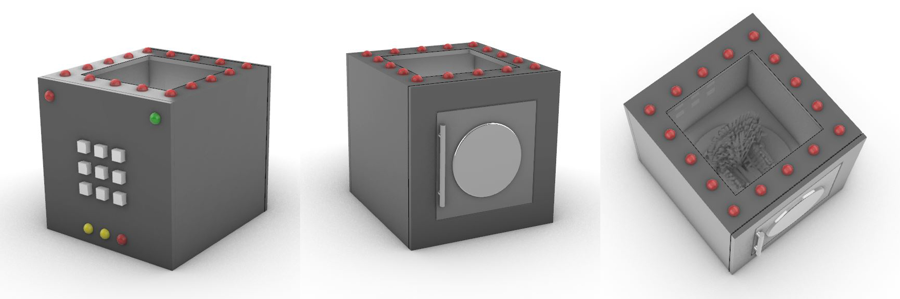

Concept
The game was imagined to be based on a fantasy series Game of Thrones. The last season of the this extremely popular series was not appreciated much by the fan following. Serving to that feeling. I imagined this game as a challenge to win the iron throne.
This game incorporates the amalgamation of the story of Game of Thrones and the physicality of a 3D puzzle. I came across a set of exceptionally interesting mechanical 3D puzzles [6] which involved moving and discovering how different parts of it worked, involving the understanding of the material and space. I thought of utilizing different sensors with Arduino, the story and tactility as the core behind the game.
It is a game imagined having multisensory experience. When a person will have to be conscious and aware of all senses while playing the game. Arduino being the perfect tool for the same, helps to utilize different sensors to get all the senses into play.
Prototype
The prototype developed uses the main concept and has explored the flow of the game as imagined using one side of the cube as challenge leading to the final challenge of opening the front of the cube.
This game helps develop problem solving and analytical skills in the player.
It is a game to open the front panel to win the Iron Throne. The game is to accomplish task on back panel, get a green signal and reach the front panel. Solve the riddle to know what must be done to open the front. All this needs to be done while the clock is ticking.

Take Away
The project helped practice everything learned earlier in the module. It refreshed the coding learned for Arduino. The interesting part was to use the learning to develop a nuanced concept. Researching a new topic and building a prototype was a great experience.